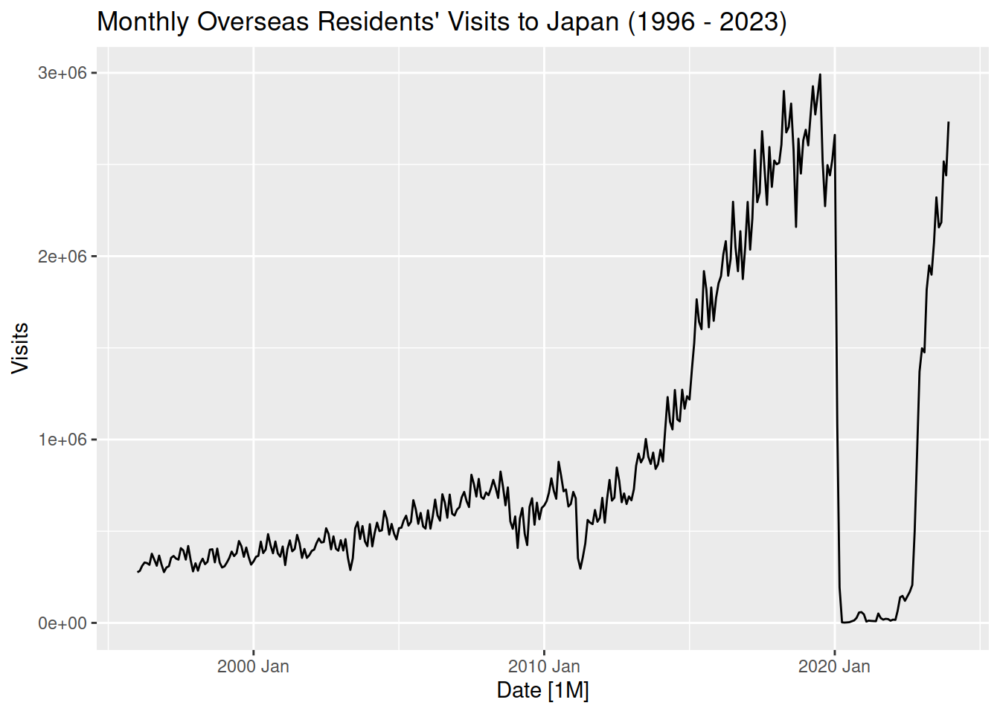
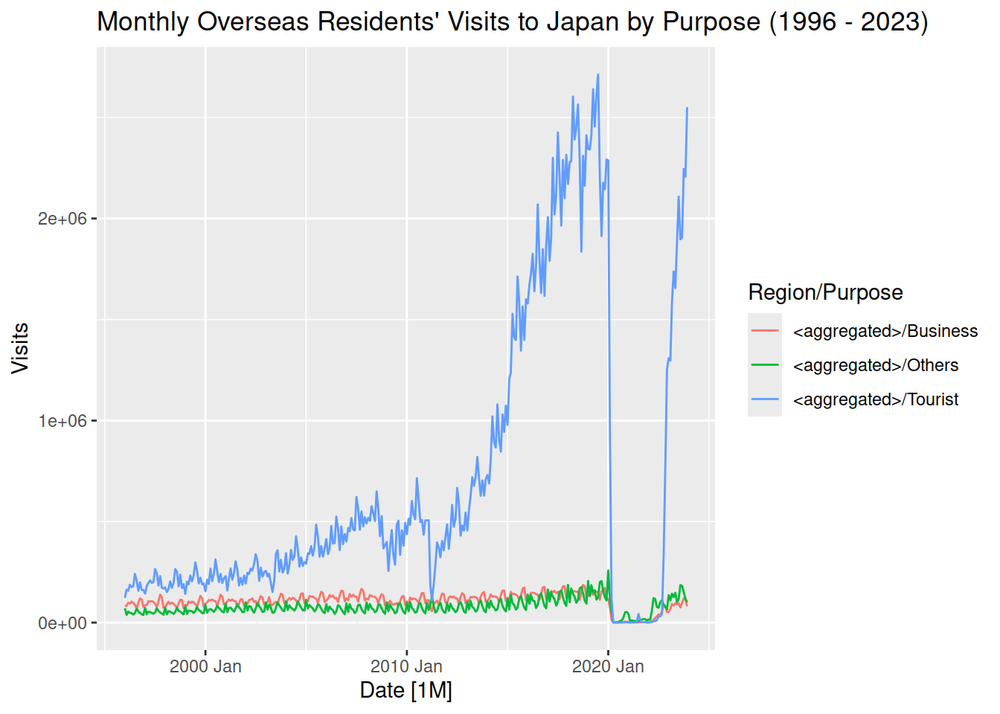
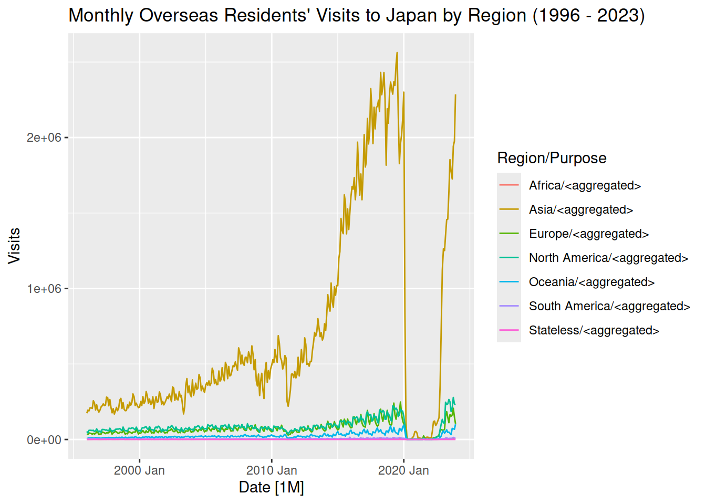
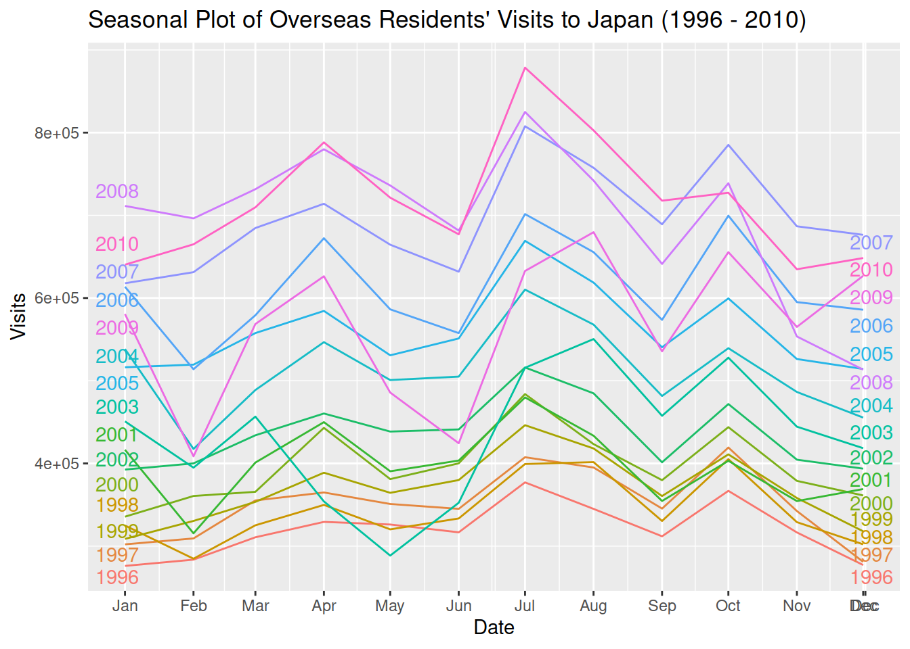
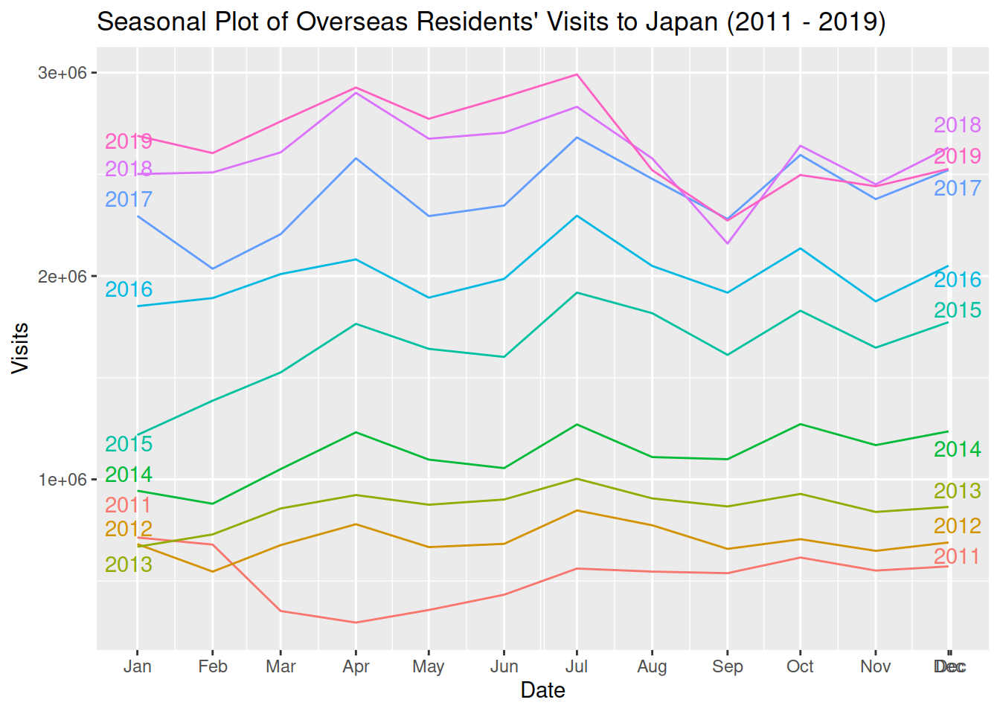
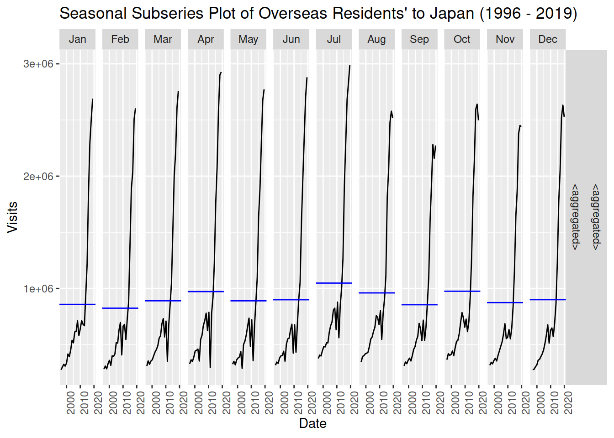
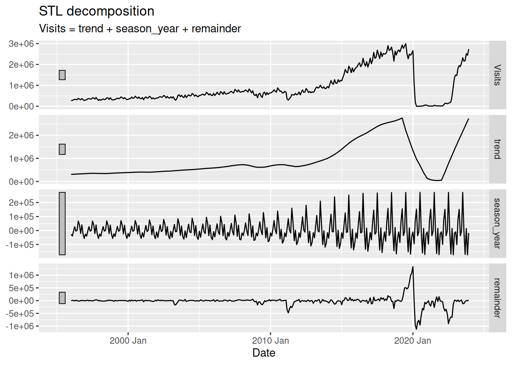
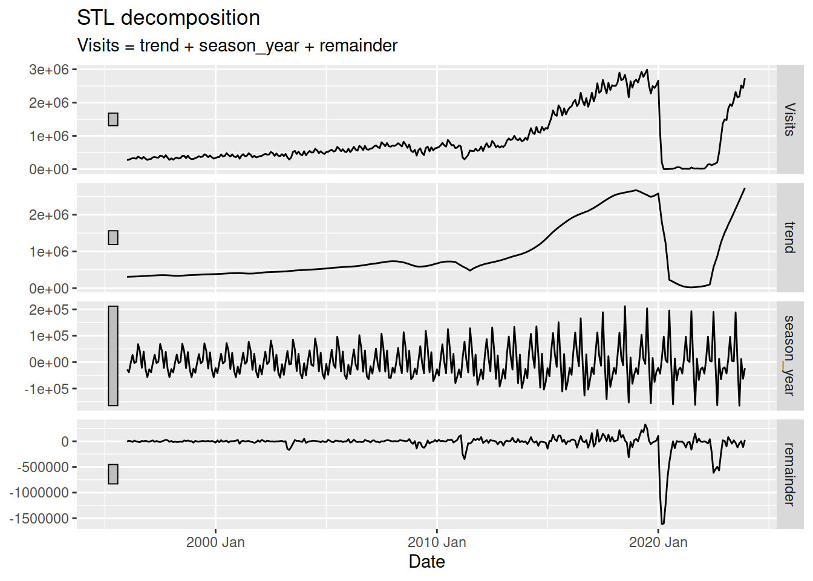
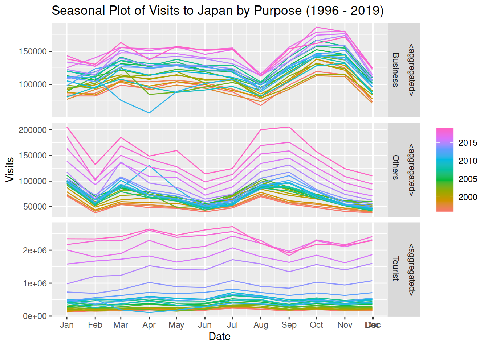
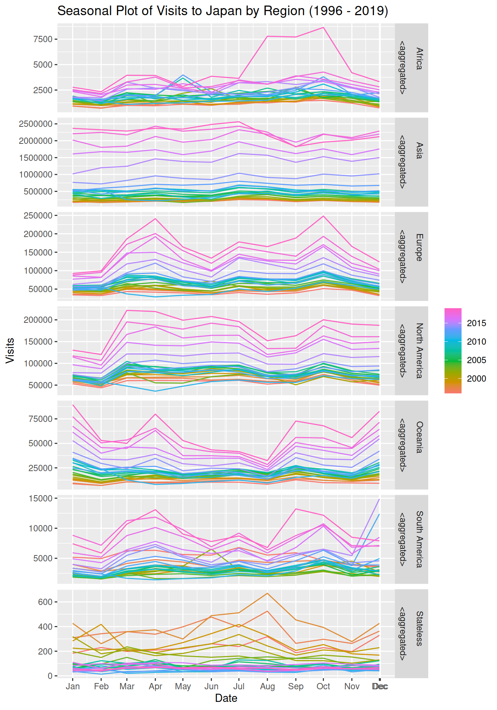

Complete formatting the dataset into the right format for time series analyses. Do a data visualization to make sure everything looks right. Take note of the characteristics of the time series data.
Prerequisites
# Load required librarieslibrary(tidyverse)
── Attaching core tidyverse packages ──────────────────────── tidyverse 2.0.0 ──
✔ dplyr 1.1.4 ✔ readr 2.1.5
✔ forcats 1.0.0 ✔ stringr 1.5.1
✔ ggplot2 3.5.1 ✔ tibble 3.2.1
✔ lubridate 1.9.3 ✔ tidyr 1.3.1
✔ purrr 1.0.2
── Conflicts ────────────────────────────────────────── tidyverse_conflicts() ──
✖ dplyr::filter() masks stats::filter()
✖ dplyr::lag() masks stats::lag()
ℹ Use the conflicted package (<http://conflicted.r-lib.org/>) to force all conflicts to become errors
library(tsibble)
Attaching package: 'tsibble'
The following object is masked from 'package:lubridate':
interval
The following objects are masked from 'package:base':
intersect, setdiff, union
In the following code chunks, I created a tsibble object appropriate for time series analyses. The date column specifies the time series as monthly data. I specified the aggregation structure of the time series within the tsibble. Each time series of the inbound visits can be categorized by region and purpose. For example, in the lowest aggregation level, there is a time series for the inbound visits to Japan from residents of the Asia region for the purpose of business.
# Fix the date formattingtourism_clean <- jp_visits |>mutate(Date =yearmonth(Date) )
# Create a tsibbletourism_ts <- tourism_clean |>as_tsibble(key =c(Region, Purpose), index = Date)
# Create an aggregation structure within the tsibbletourism_agg <- tourism_ts |>aggregate_key(Region * Purpose, Visits =sum(Visits))
# Save the tsibble with aggregation structure# save(tourism_agg, file = "tourism_agg.RData")# Load the tsibbleload("tourism_agg.RData")
# Plot the time series of the total visitstourism_agg |>filter(is_aggregated(Purpose), is_aggregated(Region)) |>autoplot() +labs(title ="Monthly Overseas Residents' Visits to Japan (1996 - 2023)")
Plot variable not specified, automatically selected `.vars = Visits`

# Plot time series aggregated by purposetourism_agg |>filter(!is_aggregated(Purpose), is_aggregated(Region)) |>autoplot() +labs(title ="Monthly Overseas Residents' Visits to Japan by Purpose (1996 - 2023)")
Plot variable not specified, automatically selected `.vars = Visits`

# Plot time series aggregated by regiontourism_agg |>filter(is_aggregated(Purpose), !is_aggregated(Region)) |>autoplot() +labs(title ="Monthly Overseas Residents' Visits to Japan by Region (1996 - 2023)")
Plot variable not specified, automatically selected `.vars = Visits`

From the time series plots, heteroskedasticity is evident. Also, we can see the effects of the COVID-19 pandemic. Although adjustments can be made regarding sudden level shifts, forecasting using ETS and ARIMA models will be problematic for low counts. Other methods can deal with this specific case, but I have yet to study these methods. Further investigation below confirms this. If we go to the lowest aggregation level, there are still some zero counts even before 2020. Given this, I will focus on forecasting time series data before 2020, aggregated by region and purpose—and the total visits.
# Observations with zero visitstourism_agg |>filter(Visits ==0)
Loading required namespace: crayon
# A tsibble: 76 x 4 [1M]
# Key: Region, Purpose [7]
Date Region Purpose Visits
<mth> <chr*> <chr*> <int>
1 2020 Apr Stateless <aggregated> 0
2 2020 May Stateless <aggregated> 0
3 2020 Jul Stateless <aggregated> 0
4 2021 Nov Stateless <aggregated> 0
5 2022 Feb Stateless <aggregated> 0
6 2009 May Stateless Business 0
7 2010 Jun Stateless Others 0
8 2011 Mar Stateless Business 0
9 2012 Feb Stateless Business 0
10 2012 Sep Stateless Business 0
# ℹ 66 more rows
# Observations pre-2020 arranged by visitstourism_agg |>filter(year(Date) <2020 ) |>arrange(Visits)
Warning: Current temporal ordering may yield unexpected results.
ℹ Suggest to sort by `Region`, `Purpose`, `Date` first.
# A tsibble: 9,216 x 4 [1M]
# Key: Region, Purpose [32]
Date Region Purpose Visits
<mth> <chr*> <chr*> <int>
1 2009 May Stateless Business 0
2 2010 Jun Stateless Others 0
3 2011 Mar Stateless Business 0
4 2012 Feb Stateless Business 0
5 2012 Sep Stateless Business 0
6 2014 Feb Stateless Business 0
7 2009 Jul Stateless Others 1
8 2010 Nov Stateless Business 1
9 2011 May Stateless Business 1
10 2011 Aug Stateless Business 1
# ℹ 9,206 more rows
While pre-2020 observations in the lowest aggregation level contain zero counts, once they are aggregated either by region or by purpose, zero counts are no longer present.
# Observations pre-2020 (aggregated by either region or purpose) arranged by visitstourism_agg |>filter(year(Date) <2020,is_aggregated(Purpose) |is_aggregated(Region), ) |>arrange(Visits)
Warning: Current temporal ordering may yield unexpected results.
ℹ Suggest to sort by `Region`, `Purpose`, `Date` first.
# A tsibble: 3,168 x 4 [1M]
# Key: Region, Purpose [11]
Date Region Purpose Visits
<mth> <chr*> <chr*> <int>
1 2012 Feb Stateless <aggregated> 14
2 2011 Mar Stateless <aggregated> 20
3 2011 Apr Stateless <aggregated> 28
4 2011 Sep Stateless <aggregated> 28
5 2011 Aug Stateless <aggregated> 30
6 2013 Mar Stateless <aggregated> 30
7 2013 Aug Stateless <aggregated> 30
8 2013 Jan Stateless <aggregated> 31
9 2011 May Stateless <aggregated> 32
10 2012 Aug Stateless <aggregated> 32
# ℹ 3,158 more rows
Seasonal Plots
Total Visits
After looking at the time plots, I proceeded further by creating seasonal plots of the time series of the highest aggregation level. I split the dataset for the next two plots for readability. There is a generally consistent seasonal pattern to the time series. The peak visits are during July (Summer) and the lowest visits are during February (Winter).
# Seasonal plot for visits during 1996 - 2010tourism_agg |>filter(is_aggregated(Purpose), is_aggregated(Region),year(Date) <=2010) |>gg_season(Visits, labels ="both", labels_repel =TRUE) +labs(title ="Seasonal Plot of Overseas Residents' Visits to Japan (1996 - 2010)")

# Seasonal plot for visits during 2011 - 2019tourism_agg |>filter(is_aggregated(Purpose), is_aggregated(Region),year(Date) >2010&year(Date) <2020) |>gg_season(Visits, labels ="both", labels_repel =TRUE) +labs(title ="Seasonal Plot of Overseas Residents' Visits to Japan (2011 - 2019)")

The seasonal subseries plots below tell the same story. The blue line represents the mean visits in each month.
# Seasonal subseries plot for visits during 1996 - 2019tourism_agg |>filter(is_aggregated(Purpose), is_aggregated(Region),year(Date) <2020 ) |>gg_subseries(Visits) +labs(title ="Seasonal Subseries Plot of Overseas Residents' to Japan (1996 - 2019) ")

I also did an STL decomposition to see how the individual components behave through time. The first one uses the default settings for a single seasonal period. For the trend, 21 consecutive observations (months) are used to estimate the trend-cycle component, and 11 consecutive years to estimate the seasonal component. The second allows for a more flexible estimation of the trend, which describes the trend-cycle component better. The setting for the seasonal window is kept the same as the more flexible window worsens the trend-cycle estimation. In any case, we see here the heteroskedasticity of the seasonal component.
# STL decomposition of the total visits# Default for a single seasonal period: trend(window = 21) + season(window = 11)tourism_agg |>filter(is_aggregated(Purpose), is_aggregated(Region)) |>model(STL(Visits, robust =TRUE)) |>components() |>autoplot()

# STL decomposition of the total visits# The trend window is adjusted for more flexible estimation of trendtourism_agg |>filter(is_aggregated(Purpose), is_aggregated(Region)) |>model(STL(Visits ~trend(window =15) +season(window =11), robust =TRUE)) |>components() |>autoplot()

By Region and Purpose
Below, I investigated the seasonality for the time series aggregated by region and purpose. Although not apparent in earlier plots with all the components, the seasonal behavior differs between these time series. Therefore, it is important to account for these features in forecasting the highest aggregation level. Wickmasuriya et al. (2018) proposed a forecast reconciliation approach through trace minimization that not only provides coherent forecast1 but also improves the forecasts by using information from the whole aggregation structure. Alternative approaches such as bottom-up and top-down approaches are unable to capture the information from the whole aggregation structure. Further, top-down approaches do not produce unbiased forecasts (Hyndman et al. 2011). Middle-out approach also exists, which tries to address the issue from those two approaches, but with grouped time series (by region and purpose), there is not an appropriate middle level.
# Seasonal plot of visits by purposetourism_agg |>filter(!is_aggregated(Purpose), is_aggregated(Region),year(Date) <2020 ) |>gg_season(Visits) +labs(title ="Seasonal Plot of Visits to Japan by Purpose (1996 - 2019)")

# Seasonal plot of visits by regiontourism_agg |>filter(is_aggregated(Purpose), !is_aggregated(Region),year(Date) <2020 )|>gg_season(Visits) +labs(title ="Seasonal Plot of Visits to Japan by Region (1996 - 2019)")

References
Hyndman, Rob J., Roman A. Ahmed, George Athanasopoulos, and Han Lin Shang. 2011. “Optimal Combination Forecasts for Hierarchical Time Series.”Computational Statistics & Data Analysis 55 (9): 2579–89. https://doi.org/10.1016/j.csda.2011.03.006.
Wickramasuriya, Shanika L., George Athanasopoulos, and Rob J. Hyndman. 2018. “Optimal Forecast Reconciliation for Hierarchical and Grouped Time Series Through Trace Minimization.”Journal of the American Statistical Association 114 (526): 804–19. https://doi.org/10.1080/01621459.2018.1448825.
Footnotes
Coherent forecasts are forecasts within an aggregation structure wherein the forecasts of the lower aggregation levels add up to the higher aggregation level. For example, if the sales forecast of all branches totals 1 million PHP, the forecast for the total sales of the whole company should also be 1 million PHP.↩︎